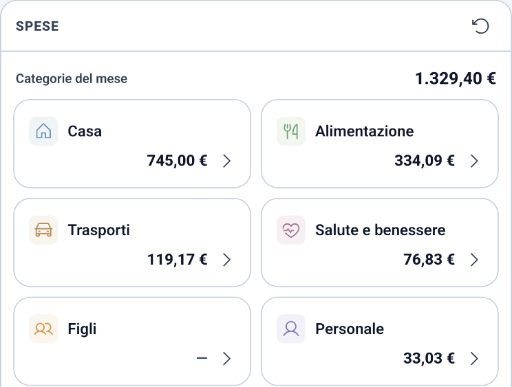
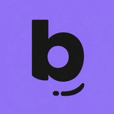
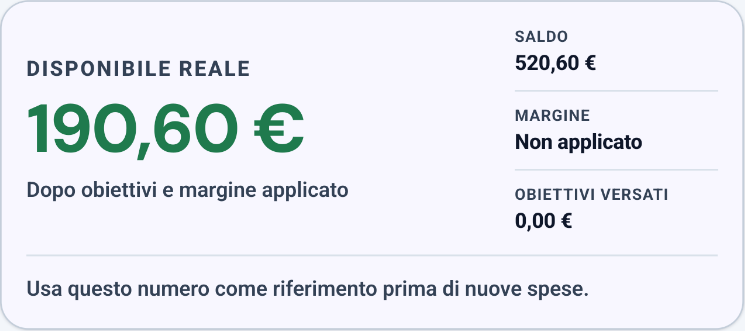
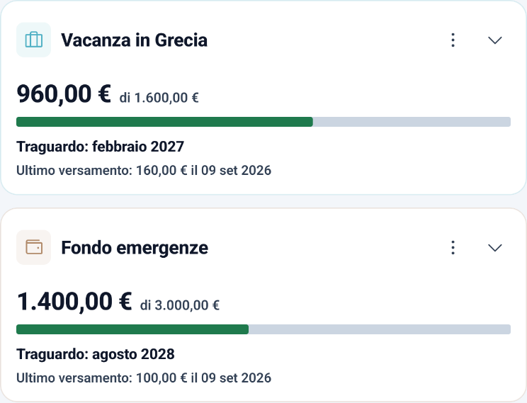
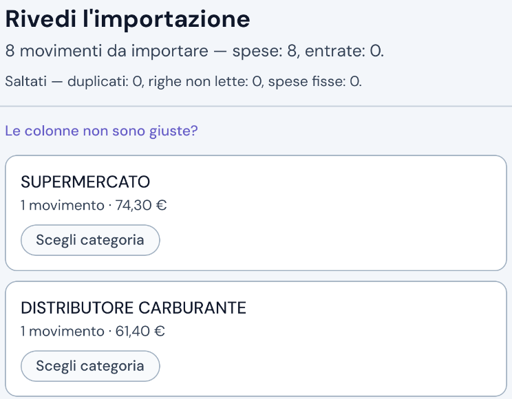

A place for every expense
Organise income and expenses by category. Enter fixed expenses once, and Bada! adds them to the months you choose.


Bada!ai tuoi soldi ItalianoA personal budget app for Android
Record income and expenses, and Bada! tells you what is left this month after your safety margin and savings goals.
And it does not send your data to anyone: the app does not even have permission to use the Internet. Check for yourself
Get it on Google PlayFree · No account · No ads · Android only

Before trusting it with your spending
An app that knows your spending, made by a developer you do not know: it makes sense to be cautious. Here is what you can check for yourself.
The Play listing’s permissions do not include full network access. Without that permission, the app cannot open network connections on its own.
Some permissions come from libraries included in the app: launcher badges, Firebase Messaging, and Play licensing or install attribution. Their presence is not the same as having Internet permission. Bada!’s reminder runs locally.
When you tap an external link, the app can open your browser. The browser then handles the connection.
Turn on aeroplane mode and record an expense: it works just the same.
For example, that a backup folder synced to a cloud service, or Android’s system backup, can take your data off the phone.
Read the privacy policyInside Bada!
Screenshots show the Italian interface; you pick English on first launch. Tap a screenshot to open it and zoom in using your browser.
Organise income and expenses by category. Enter fixed expenses once, and Bada! adds them to the months you choose.

Set how much you need and by when. Bada! calculates this month’s contribution still to be paid and deducts it from what is available to spend.

Import your bank’s CSV and Bada! finds dates and amounts, groups expenses by merchant and remembers their category. You review everything before saving.

You can also see a chart of your year with your best and worst months, export transactions as CSV, use an evening reminder that stays quiet if you have already recorded an expense today, choose a light or dark theme, select your currency, switch between Italian and English, and open “Add expense” by holding the app icon.
A copy in the folder you choose
On first launch, or in Settings, choose a folder on your phone. Once a day, when you open the app, Bada! saves a complete backup there, replacing the same file. It stays there even if you uninstall the app.
On your new phone, tap “I’ve used Bada! before”, choose the folder and decide what to restore: settings, goals, fixed expenses and years.
The copy follows you if the folder is synced, or if you move the file to your new phone. Without a folder there is no backup, and the app will remind you.
Worth knowing before you install it.
It is a personal project: no ads, no subscription, no account and no server collecting your data.
It does not connect to any bank. If your bank lets you download transactions as CSV, Bada! tries to recognise dates, descriptions and amounts. If it gets a column wrong, you can choose it yourself. If you have an Excel file, save it as CSV first. Banks use different formats, so not every format is guaranteed to work.
For the evening reminder, set to 20:00 by default and adjustable. It is local: the app schedules it on your phone. You can decline, and everything else works as usual.
Who makes it
I develop Bada! on my own, in Italy.
If something goes wrong, “Export diagnostics” appears at the bottom of Settings, but only if the app has recorded an error. It is a text file: you can read it before deciding whether to send it.
The first launch guides you step by step, and no step requires you to enter anything.
Get it on Google PlayIf it is not for you, uninstall it. There is no account to close.